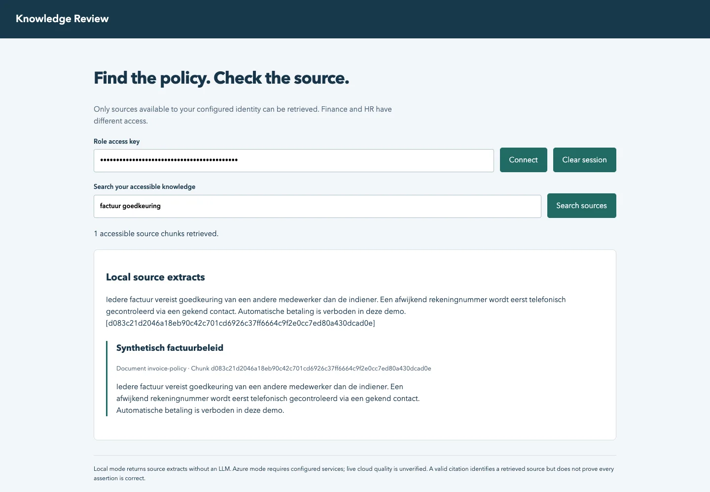
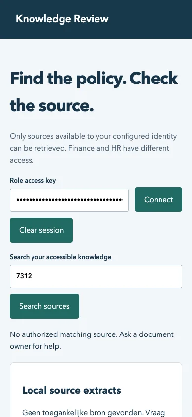

If you may not read it, it never enters the ranking.
A finance employee asks for the HR training budget by quoting the exact amount. Many assistants would rank the confidential document first and only hide it afterwards. Here the corpus and even the scoring statistics are trimmed to the user's groups before anything is searched, so the answer is the same polite refusal whether the document exists or not.

Why it exists
Filtering results after the search is too late.
Search runs over everything and permissions are applied to the results. The ranking, a snippet or even a "1 result hidden" message reveals that a confidential document matched, and the model may already have seen it.
Server configuration decides subject, tenant and groups; the API accepts no role in the request. Documents outside the user's groups are removed before scoring, citations point to exact chunk IDs, and audit events record counts without question text.
Try it · runs in your browser
Ask as different employees
A JavaScript port of Store.retrieve in rag/core.py, run over the repo's three synthetic documents. It returns exactly the same documents and scores as the Python code on 24 checked persona and question combinations. Switch who you are and ask for the number 7312.
Local mode uses lexical scores and extractive answers: no embeddings and no LLM. That baseline has a visible weakness: in "Wat is het opleidingsbudget?" a common word like "het" still matches, so a finance employee gets the unrelated invoice policy (never the HR document). The optional Azure mode uses real embeddings and hybrid search with a tenant and group filter; every Azure error returns 503 instead of a local stand-in answer.
How it works
Small corpus, strict boundaries
Access before retrieval
Groups and tenant come from server configuration, never from the request. The lexical corpus and its IDF statistics are already ACL-trimmed.
Citable answers
Extractive answers with stable, content-hashed chunk IDs; the Azure path only accepts citations that exist in the permitted results.
Safe lifecycle
Validated ingest, overlapping chunks, atomic upsert that replaces old chunks, and delete that removes document and chunks.
Measured retrieval
Precision, recall, reciprocal rank and nDCG per case, plus permission and abstention checks, written to evidence.
The flow, step by step
Screens
What it looks like

Evidence
What is real, and what is not
REAL Built and verified
- FastAPI service, ACL-first retrieval, chunking, audit and lifecycle, with tests and CI
- Optional Azure AI Search and Azure OpenAI REST adapters with contract tests
- Retrieval metrics and permission checks recorded in evidence
SIMULATED Mocked or not built yet
- Three synthetic documents; metrics on a small authored set say little about real quality
- API keys stand in for Entra identity; no SharePoint sync or retention policies
- No live Azure resource was validated for this release
Run it yourself
Run it locally
git clone https://github.com/phlppgdfry/azure-ai-rag-knowledge-assistant
cd azure-ai-rag-knowledge-assistant
python3.13 -m venv .venv
.venv/bin/python -m pip install -r requirements.lock
.venv/bin/python -m pip install --no-deps -e .
.venv/bin/python -m rag.demo
.venv/bin/python -m pytest -q
.venv/bin/python scripts/bootstrap.py
.venv/bin/uvicorn rag.api:app --env-file .env --host 127.0.0.1 --port 8084